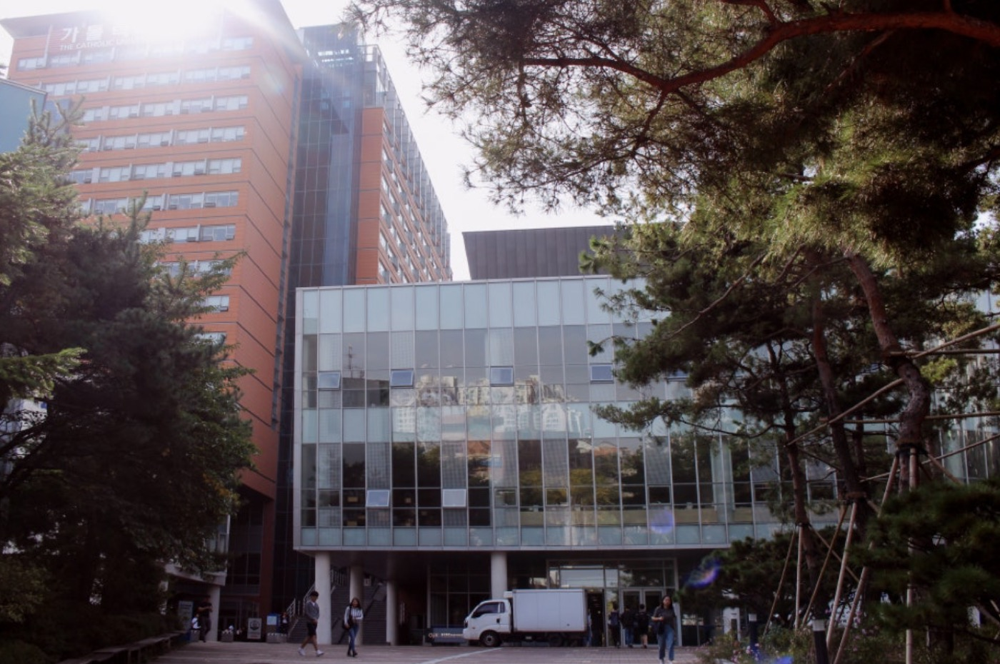
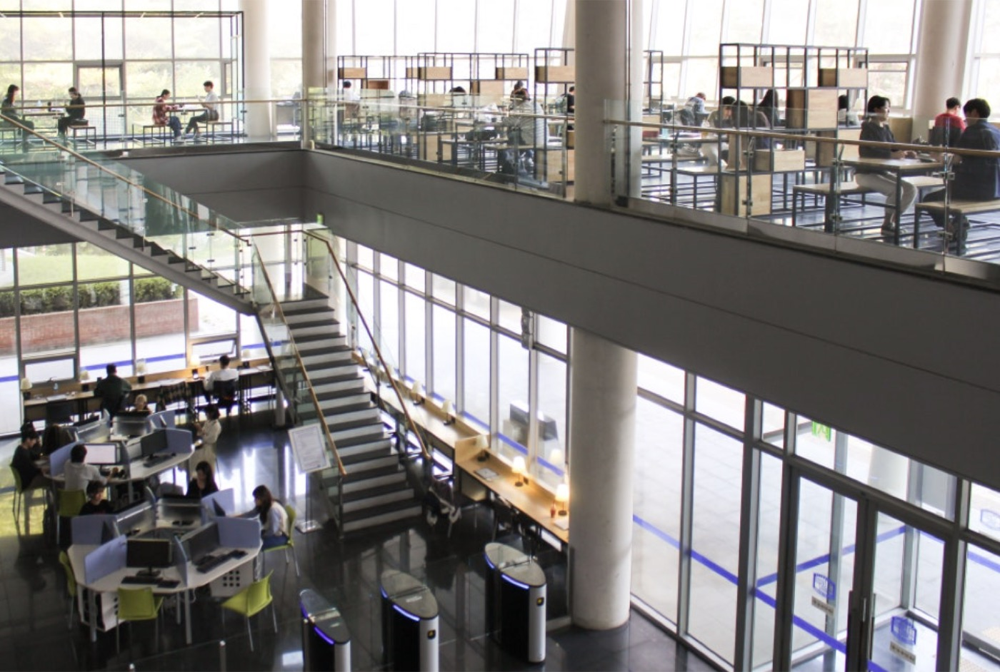
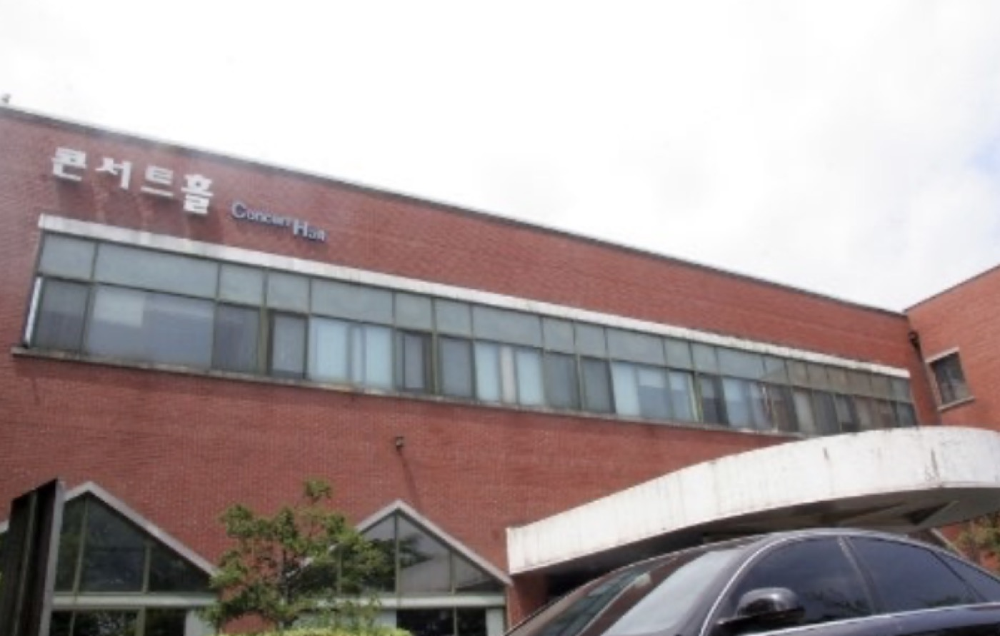
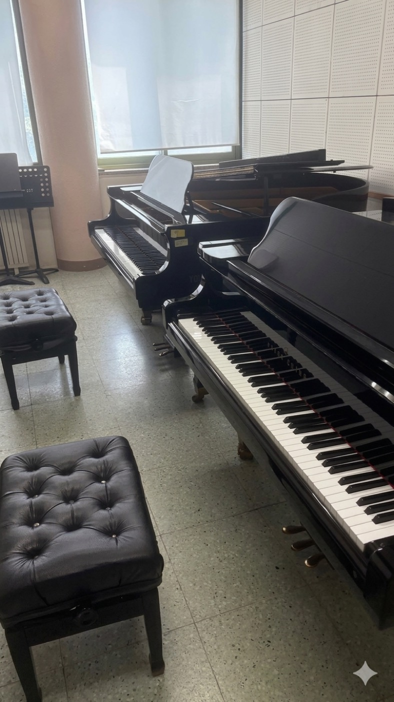
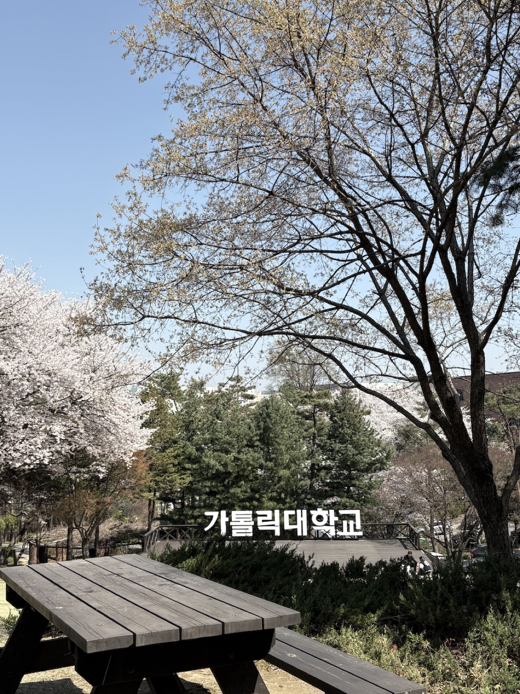
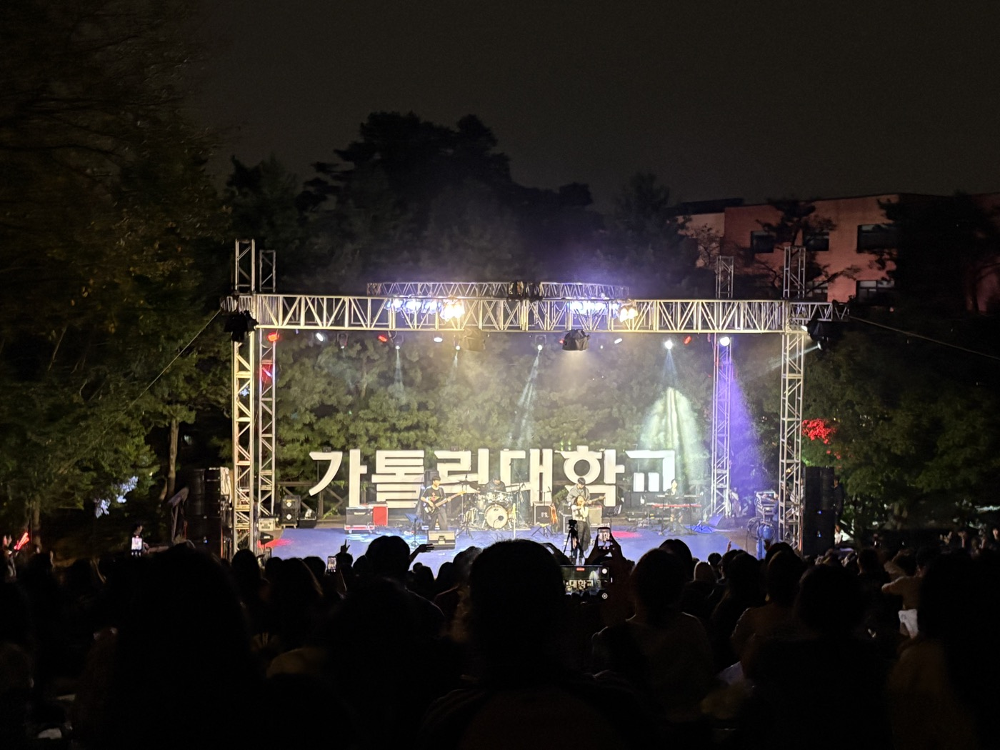

지박령이 되어버리는 김수환관
언덕에 지치지 않게 해주는 가톨릭대의 심장


이 장소가 의미 있는 이유
김수환관에 엘리베이터가 없었다고 생각하면 정말 끔찍합니다. 시험기간에 중앙도서관까지 올라가기 힘들 때 학생식당과 인문 커뮤니티 라운지를 애용합니다.
밥, 공부, 강의, 카페, 헬스, 스터디 모임까지 모든 것을 한 건물에서 해결할 수 있는 유일한 곳입니다.
이래서 추천합니다
- 새 학기 맞이로 헬스장 등록하기
- 학생식당에서 간식 먹으면서 공부하기
찾아가는 방법
가톨릭대 정문 바로 앞 건물입니다. 네이버 지도에서 보기
가장 의미있는 콘서트홀
음악과 동기들과 배달 시켜먹기 좋은 장소


이 장소가 의미 있는 이유
저는 음악과로 입학해서 전과했기에, 저의 첫 가톨릭대인 콘서트홀이 어떤 장소보다도 가장 뜻깊습니다.
이래서 추천합니다
- 5월 아우름제 때 음악과에서 여는 귀신의 집 탐방하기
- 연주회가 열릴 때 반드시 감상해보기
찾아가는 방법
정문에서 하염없이 올라가다 보면 나오는 으스스한 건물입니다. 네이버 지도에서 보기
피크닉의 대명사 스머프 동산
날씨 좋은 날 동기들과 배달음식으로 피크닉하기 좋은 장소


이 장소가 의미 있는 이유
봄, 가을 맑은 날씨에 늘 동기들과의 추억이 여기서 쌓였기 때문입니다.
이래서 추천합니다
- 날씨 좋은 중간고사 기간에 야외에서 공부하기
- 10월 축제인 '다맛제'를 신나게 즐기기
찾아가는 방법
정문에서 하염없이 걸어가다 보면 나오는 초록 언덕과 가톨릭대학교 표지판이 있는 곳입니다. 네이버 지도에서 보기